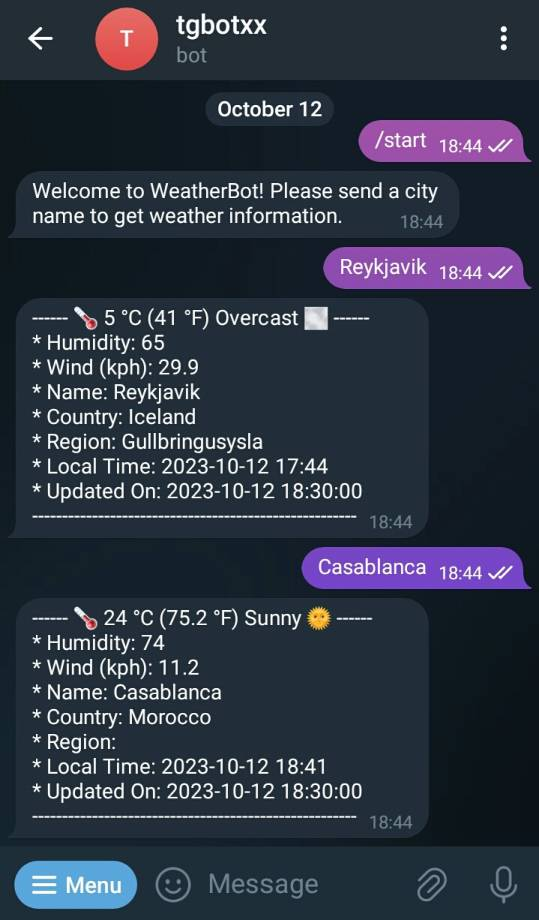
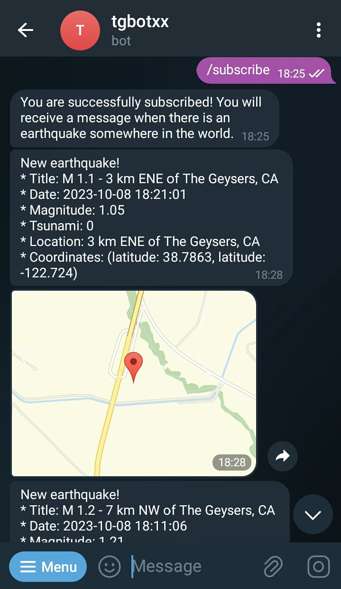
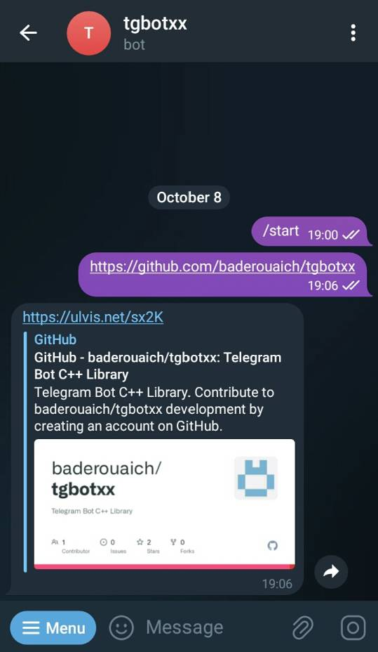
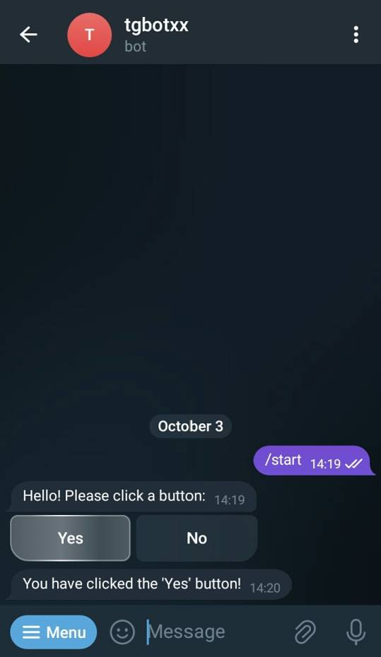
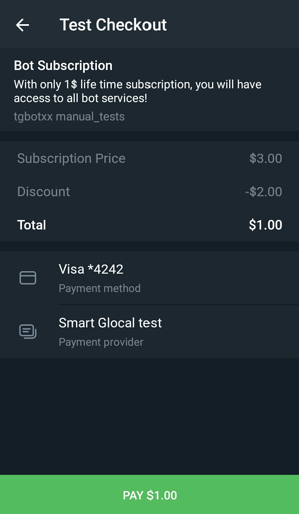
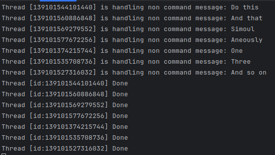

Loading...
Searching...
No Matches
tgbotxx


tgbotxx
Telegram Bot C++ Library
Features
- Compatible with Telegram Bot API 9.2 (August 15, 2025)
- Simple, Fast and Reliable.
- Uses libcpr for HTTP requests and nlohmann::json for JSON parsing (Both are exposed to the user by default)
- Cross Platform (Ubuntu, Windows and macOS)
- Plenty of examples
- MIT License
- C++ 20
CI Status
| Operating system | Build status |
|---|---|
| Ubuntu (x64) |  |
| Windows (x64) |  |
| macOS |  |
Basic sample
see examples for more
#include <tgbotxx/tgbotxx.hpp>
#include <iostream>
using namespace tgbotxx;
public:
private:
// Called before Bot starts receiving updates
void onStart() override {
// Initialize your code here...
std::cout << "Bot Started\n";
}
// Called before Bot shuts down (triggered by Bot::stop())
void onStop() override {
// Cleanup your code here
std::cout << "Bot Stopped\n";
}
// Called when Bot receives a new message of any kind
// NB: Ptr<T> = std::shared_ptr<T>
api()->sendMessage(message->chat->id, reply);
}
// override other callbacks if needed... See Bot.hpp
};
int main() {
return 0;
}
Definition Bot.hpp:30
Definition Api.hpp:11
Examples
see examples for more
| Example | Description | Preview |
|---|---|---|
| WeatherBot | Bot that displays the weather information of a city using the weather api. |  |
| EarthquakeBot | Bot that will alert you if there is a recent earthquake somewhere in the world. |  |
| QrCodeBot | Bot that can generate QrCode images from text and extract text from QrCode Images. | |
| UrlShortenerBot | Bot for shortening URLs. |  |
| Inline Buttons | Bot that uses inline keyboard buttons to interact with users. |  |
| Keyboard Buttons | Bot that uses keyboard buttons to interact with users. |  |
| PaidSubscriptionBot | Bot that offers it's services for a paid subscription. |  |
| ThreadPoolBot | Bot that uses a ThreadPool to handle multiple requests simultaneously. |  |
| GitWatcherBot | Real world Bot that you can use to watch repositories changes and get notified about (stars, forks, issues, watchers and pulls). |  |
Usage (4 approaches)
1. FetchContent *(recommended)*
Simply use CMake's FetchContent in your project's CMakeLists.txt as below:
cmake_minimum_required(VERSION 3.20)
project(my_bot)
set(CMAKE_CXX_STANDARD 20)
set(CMAKE_CXX_STANDARD_REQUIRED ON)
include(FetchContent)
FetchContent_Declare(tgbotxx
GIT_REPOSITORY "https://github.com/baderouaich/tgbotxx"
GIT_TAG "v1.2.9.2" # Compatible with Telegram Api 9.2
GIT_SHALLOW TRUE
GIT_PROGRESS TRUE
EXCLUDE_FROM_ALL
)
FetchContent_MakeAvailable(tgbotxx)
add_executable(${PROJECT_NAME} main.cpp)
target_link_libraries(${PROJECT_NAME} PUBLIC tgbotxx)
2. PkgConfig: clone and install the library locally, then use PkgConfig:
example
git clone https://github.com/baderouaich/tgbotxx
cd tgbotxx
cmake .. -DCMAKE_BUILD_TYPE=Release
sudo make install
# On Windows run `make install` as administrator
cmake_minimum_required(VERSION 3.20)
project(my_bot)
set(CMAKE_CXX_STANDARD 20)
set(CMAKE_CXX_STANDARD_REQUIRED ON)
find_package(PkgConfig REQUIRED)
pkg_check_modules(tgbotxx REQUIRED tgbotxx)
if (NOT tgbotxx_FOUND)
message(FATAL_ERROR "Did you install tgbotxx locally?")
endif ()
add_executable(${PROJECT_NAME} main.cpp)
target_link_directories(${PROJECT_NAME} PUBLIC ${tgbotxx_LIBRARY_DIRS})
target_include_directories(${PROJECT_NAME} PUBLIC ${tgbotxx_INCLUDE_DIRS})
target_compile_options(${PROJECT_NAME} PUBLIC ${tgbotxx_CFLAGS_OTHER})
target_link_libraries(${PROJECT_NAME} PUBLIC ${tgbotxx_LIBRARIES})
3. find_package: clone and install the library locally, then use find_package(tgbotxx REQUIRED):
example
cmake_minimum_required(VERSION 3.20)
project(my_bot)
set(CMAKE_CXX_STANDARD 20)
set(CMAKE_CXX_STANDARD_REQUIRED ON)
find_package(tgbotxx REQUIRED)
if (NOT tgbotxx_FOUND)
message(FATAL_ERROR "Did you install tgbotxx locally?")
endif ()
add_executable(${PROJECT_NAME} main.cpp)
target_link_directories(${PROJECT_NAME} PUBLIC ${tgbotxx_LIBRARY_DIRS})
target_include_directories(${PROJECT_NAME} PUBLIC ${tgbotxx_INCLUDE_DIRS})
target_compile_options(${PROJECT_NAME} PUBLIC ${tgbotxx_CFLAGS_OTHER})
target_link_libraries(${PROJECT_NAME} PUBLIC ${tgbotxx_LIBRARIES})
4. Submodule: Use tgbotxx as a project submodule (without installation)
example
You can also use this library as a submodule in your bot project without the need of installing it in your system. Use git clone or git submodule add the library:
git submodule add https://github.com/baderouaich/tgbotxx ./lib/tgbotxx
or
git clone https://github.com/baderouaich/tgbotxx ./lib/tgbotxx
Then add add_subdirectory(lib/tgbotxx) in your CMakeLists.txt.
cmake_minimum_required(VERSION 3.20)
project(my_bot)
add_subdirectory(lib/tgbotxx) # <-- clone tgbotxx in your project's lib/ directory
add_executable(${PROJECT_NAME} main.cpp)
target_link_libraries(${PROJECT_NAME} PUBLIC tgbotxx) # <-- link with tgbotxx
Other actively maintained Telegram Bot C++ Libraries
- tgbot-cpp: C++ library for Telegram bot API
- tgbot: C++ library for Telegram Bot API with generated API types and methods